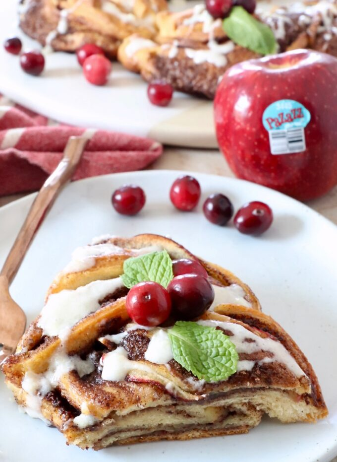
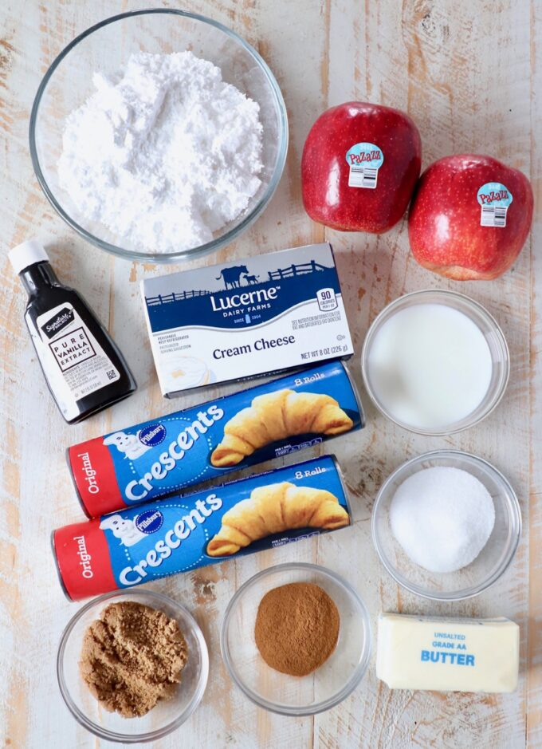

01
Roll out the dough
Place parchment paper on your work surface. Lay the dough sheets slightly overlapping and press the seams together to make one large rectangle.
HOMEMADE · SWEET · COMFORTING
A golden, braided cinnamon pastry filled with buttery cinnamon sugar and crisp apple slices. Perfect for sharing.
Explore the recipe
Prep & bake
About 1 hour
Difficulty
Easy to follow
Best for
Sharing
A LITTLE BAKING JOY
This wreath combines soft pastry, cinnamon butter, and thinly sliced apples. Braiding the dough gives it a beautiful shape, while the golden finish makes it a lovely centrepiece for breakfast or dessert.

STEP BY STEP
Follow each step for a golden wreath.

Place parchment paper on your work surface. Lay the dough sheets slightly overlapping and press the seams together to make one large rectangle.

Mix softened butter with granulated sugar, brown sugar, and ground cinnamon. Spread it evenly over the dough, then arrange thin apple slices in a single layer.

Roll the dough tightly into a tube. Slice it lengthwise, turn the filling sides upward, and carefully braid the two halves together.

Join the ends to form a wreath and transfer it with the parchment paper to a baking sheet. Bake at 350°F (about 175°C) for 20–25 minutes, until golden brown.